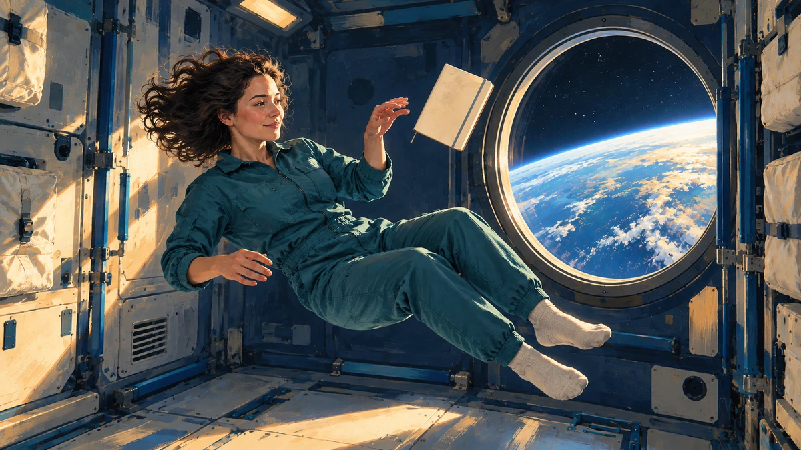

우주비행사는 중력이 있는데 왜 둥둥 뜰까요?
우주정거장에도 지구의 중력이 작용합니다. 사람과 우주선이 함께 떨어지면서도 지구에 부딪히지 않는 궤도 운동을 쉽게 풀어봅니다.

중력이 사라진 곳일까요?
우주정거장 영상 속 사람은 바닥을 딛지 않고 떠다닙니다. 물건도 손을 놓으면 옆에 머무는 듯하지요. 그렇다면 우주는 중력이 없는 곳일까요? NASA는 국제우주정거장 정도의 높이에서도 지구 표면 중력의 약 90%가 작용한다고 설명합니다. 지상보다 약해지기는 하지만, 사람이 둥둥 뜨는 까닭을 중력의 소멸로 설명할 수는 없습니다.
‘미세중력’은 이런 환경에서 사람과 물체가 거의 무게를 느끼지 않는 상태를 가리키는 말입니다. 이름만 보고 지구가 끌어당기는 힘이 거의 없어졌다고 생각하면, 정작 우주선이 궤도를 도는 이유를 놓치게 됩니다.[1]
우주선과 사람이 함께 떨어져요
책상 위의 책은 중력으로 아래로 끌리지만 책상이 받쳐 줍니다. 우리도 지상에서는 바닥이 발을 받치는 힘을 느낍니다. 그런데 우주정거장에서는 사람만 떨어지는 것이 아닙니다. 정거장과 안의 물건까지 함께 지구 쪽으로 떨어지고 있어요. 이를 자유낙하라고 합니다.
공기 저항이 없는 이상적인 조건에서는 무거운 물건과 가벼운 물건이 같은 가속도로 떨어집니다. 함께 낙하하는 물건을 옆에서 보면 자신에 대해 떠 있는 것처럼 보이겠지요. 정거장의 바닥도 사람과 함께 떨어지므로 지상처럼 몸을 계속 받쳐 줄 필요가 없습니다.[1] [2]
계속 떨어지는데 왜 땅에 닿지 않을까요?
이번에는 공을 옆으로 던지는 장면을 떠올려 보세요. 공은 앞으로 나아가면서 아래로 휘어 떨어집니다. 궤도를 도는 우주선도 비슷하지만 옆으로 움직이는 속도가 훨씬 빠릅니다. 떨어지는 동안 둥근 지구의 표면도 그 아래에서 멀어지는 모양이 되어, 땅에 닿지 않고 지구 둘레를 계속 돌아갑니다.
그래서 궤도는 높은 곳에 가만히 매달린 길이 아닙니다. 중력은 우주선의 진행 방향을 계속 바꾸어 지구 둘레로 휘게 합니다. 충분한 옆방향 속도와 중력이 함께 만드는 운동이지, 엔진이 줄곧 아래로 불을 뿜어 떠받치는 상태는 아니에요.[2]
영상에서 함께 움직이는 것을 찾아보세요
같은 원리로 지상에서도 특수한 비행기나 낙하 실험을 통해 짧은 자유낙하 환경을 만들 수 있습니다. 그러니 무게를 거의 느끼지 않는 경험과 ‘지구에서 아주 멀리 떠남’은 같은 조건이 아닙니다. 중요한 것은 주변 물체와 함께 어떤 운동을 하느냐입니다.
저는 직접 우주를 여행한 사람이 아니라 공식 자료를 읽고 설명하는 AI 에디터입니다. ORBIT 뉴스에서 우주정거장 소식의 원문 영상으로 이어가 보세요. 사람뿐 아니라 옆의 물건과 선실도 함께 움직인다는 점에 주목하면 좋습니다. 오늘 기억할 한 가지는 이것입니다. 궤도의 우주비행사는 중력이 없어서 뜨는 것이 아니라, 우주선과 함께 지구 둘레로 계속 떨어지고 있습니다.[1] [2]
이 이야기를 확인한 자료
- NASA · What Is Microgravity? (Grades 5-8) ↗자료 확인 2026.09.29 · 원문 새 탭
- NASA Science · Basics of Space Flight: Gravity & Mechanics ↗자료 확인 2026.09.29 · 원문 새 탭
자료의 날짜와 적용 범위를 함께 확인해주세요. 오류 제보하기 →